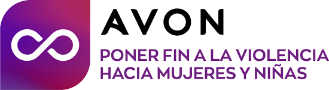

Una de tres mujeres será víctima de violencia en algún momento de su vida en el mundo y en México, 11 mujeres son víctimas de feminicidio diariamente de acuerdo con la Organización de las Naciones Unidas (ONU).
En Avon, consideramos que cada mujer es una persona, no solo una estadística, y cada instancia de violencia está de más. Las situaciones en las que estas conductas o delitos se gestan en general se presentan en el hogar, dentro de relaciones que deberían ser refugios de confianza y amor.

Por eso, renovamos nuestro compromiso para poner fin a la violencia y el abuso y utilizaremos nuestros recursos, nuestra gente y nuestra energía en los mercados de todo el mundo para lograr los siguientes objetivos:
CONCIENTIZACIÓN
Usaremos nuestra presencia global para difundir las distintas formas de violencia contra las mujeres y niñas, y para debatir y determinar qué debe cambiar para ponerle fin.
CAPACITACIÓN
Nos aseguraremos de que todas las personas con las que trabajamos, es decir, nuestra red de representantes comerciantes independientes, empleados, clientes y socios, tengan el conocimiento y la información necesaria para reconocer y responder a la violencia de género de manera segura y por sus propias convicciones.
MEJORAR LA ASISTENCIA
Trabajamos con organizaciones locales para garantizar que las mujeres y las niñas tengan acceso al apoyo que necesitan para lograr una mejor convivencia y desarrollo social y familiar, así como para lograr el pleno ejercicio de sus derechos humanos. Reunimos a líderes locales y globales, así como a promotores de cambios para ayudar a garantizar que las mujeres y las niñas se sientan comprendidas y apoyadas y reciban un trato justo cuando buscan ayuda o denuncian abusos.
Desde su lanzamiento en México se han donado más de 22 millones de pesos y trabajado con más de 2 millones de mujeres en todo el país y estamos conscientes de que falta mucho por hacer, por ello, convocamos a las organizaciones de la sociedad civil y fundaciones de beneficencia (en adelante las “Organizaciones”) que deseen implementar proyectos en cualquiera de las siguientes:
Áreas de impacto
-
Fortalecimiento de las instituciones dedicadas a la protección, apoyo y asistencia.
- Garantizar la igualdad de condiciones para que las mujeres y las niñas puedan acceder a los servicios jurídicos y especializados de forma gratuita, de esta forma, se respalda el acceso a la justicia y a una vida libre de todo tipo de violencia.
- Brindar acceso universal a los servicios esenciales siendo, como mínimo, las necesidades urgentes e inmediatas de las mujeres de todas las edades atendidas mediante líneas de emergencia gratuitas que trabajen las 24 horas del día los 365 días del año, contando con intervenciones rápidas para su seguridad y protección, con viviendas y refugios seguros para ellas, con un seguimiento y apoyo psicosocial y con una ayuda jurídica gratuita para que comprendan sus derechos y opciones.
- Profesionalizar a aquellos que trabajan en los servicios esenciales de administración de justicia (policía, abogados, ministerio público, jueces) de modo que se refuerce el cumplimiento de normas y protocolos de calidad así como el acceso a la justicia. Los servicios deberán ser confidenciales, sensibles y adecuados.
-
Sensibilización para la prevención aumentando la conciencia pública y la movilización social.
- Recopilación, análisis y difusión de la información en materia de prevalencia, estadísticas, causas y consecuencias de la violencia contra las mujeres de todas las edades y de los progresos y carencias en la implementación de las políticas y las leyes nacionales.
- Aumentar la conciencia pública y la movilización social para permitir a las mujeres que son víctimas de violencia, rompan el silencio y busquen justicia y apoyo psicológico, médico, legal y de cualquier otro tipo que sea necesario.
- Creación de una opinión pública sensible a la comunicación de hechos e involucramiento de los medios de comunicación para este fin, así como evaluar y tomar acciones respecto a las normas de género perjudiciales que perpetúan la violencia contra las mujeres y las niñas.
-
Educación para la prevención para alentar la igualdad y la solidaridad entre los géneros.
- Promover la educación desde temprana edad en diferentes ámbitos (relaciones sociales, la salud, entre otras) y aumentar la participación y el liderazgo político y económico de las mujeres para coadyuvar en la prevención, detección, atención, disminución y erradicación de la violencia familiar y sexual. La igualdad entre los géneros y la erradicación de la violencia contra las mujeres deben situarse firmemente en el centro del logro de los Objetivos de Desarrollo del Milenio.
- Trabajar con los jóvenes para poner fin a la violencia contra las mujeres y garantizar que el sistema educativo proporcione a la niñez herramientas que les permitan transformar y establecer relaciones de equidad basadas en la armonía, el respeto mutuo, la no violencia y una cultura basada en el reconocimiento y respecto de los derechos humanos.
- Sensibilizar a los hombres de todas las edades para que se manifiesten en contra de la violencia contra las mujeres, de modo que alienten la igualdad y la solidaridad entre los géneros.
-
Promover el empoderamiento económico de las mujeres para que obtengan oportunidades económicas y laborales para lograr la autonomía e independencia económica que les permita desarrollar habilidades para evitar que vivan o toleren situaciones de violencia, explotación y abuso.
Tiempos de la Convocatoria
| Actividades importantes |
Tiempo de desarrollo y/o notificación |
|
Pre –inscripción de proyectos (envío de cartas de intención)
|
18 Abril al 31 Mayo 2022
|
|
Notificación de continuidad en el proceso
|
22 al 24 de Junio 2022
|
|
Registro para acceso a la plataforma electrónica
|
28 de Junio al 8 de Julio 2022
|
|
Registro propuesta en extenso en la plataforma
|
11 al 30 Julio 2022
|
|
Asignación de dictaminadores
|
Agosto-Septiembre 2022
|
|
Evaluación de proyectos
|
Septiembre- Noviembre 2022
|
|
Respuesta de sus proyectos, vía correo electrónico
|
Diciembre 2022 – Enero 2023
|
|
Confirmación para la entrega de los donativos
|
Febrero - Marzo 2023*
|
Pre-inscripción
En esta fase las Organizaciones tendrán del 18 de abril al 31 de Mayo 2022 para presentar una carta de intención de su iniciativa.
La carta debe contener lo siguiente:
- Descripción de la problemática.
- El objetivo de la iniciativa y señalar explícitamente el Área de Impacto al que apunta la propuesta.
- Sector al que va dirigido,
- Cuantificación de los beneficiarios*,
- Metas y estrategia para la implementación del proyecto,
- Ubicación geográfica en el desarrollo de las actividades,
- Monto total requerido y desglose de cómo se ocuparía en caso de obtenerlo.
- La extensión deberá ser máxima de dos cuartillas.
- Enviar vía correo electrónico a la siguiente dirección: (ingrid.espinosa@avon.com)
- Asunto del correo electrónico: Pre-Inscripción_Promesa_PonerFinala_Violencia_2022_ (Nombre del grupo o institución postulante)
- Fecha límite de envío: 23:59:59 horas, hora del centro de México, CDT, (UTC GMT -5 horas), del 31 de mayo de 2022
- No se recibirán postulaciones que no hayan llegado a través de los procesos establecidos por el área de Responsabilidad Social de AVON México.
*Beneficiarias: Son todas aquellas personas que obtienen algún tipo ventaja /provecho de un proyecto y su implementación. Se puede identificar dos tipos de beneficiarias: directas e indirectas:
-
Beneficiarios directos: Son aquellos que obtienen de manera directa la atención del proyecto, es decir, los beneficiarios directos podrían ser las personas que estarán empleadas en el proyecto, profesionales de la salud que se actualizarán en temas relacionados a la violencia. También, las personas que usarán los servicios, las personas que recibirán la formación impartida durante la implementación del proyecto, o las personas que usarán de alguna manera el producto del proyecto, los pacientes de servicio de salud, las mujeres asistentes a la casa de asistencia; así como las voluntarias, profesionales de la salud, terapeutas o psicólogas que trabajen en la organización para el proyecto en el año de ejecución.
-
Beneficiarios indirectos: Los beneficiarios indirectos, son generalmente, pero no siempre, las personas que viven alrededor de la mujer que padece alguna situación de violencia. Así como, las comunidades que viven alrededor de una organización que se enfoque en temas de prevención, o la clínica que preste los servicios especializados de los ganadores del proyecto.
Requisitos
Las fundaciones y asociaciones que deseen participar en la Promesa Avon de Poner Fin a la Violencia Hacia Mujeres y Niñas deberán cumplir con los siguientes requisitos para participar:
De los Participantes
-
Podrán participar todas aquellas fundaciones, asociaciones, organizaciones civiles y fideicomisos debidamente constituidos que estén debidamente autorizados para recibir donativos deducibles de impuesto sobre la renta y aparezcan publicadas en el Directorio de Donatarias Autorizadas 2022 cuyos fines y objetivos sean compatibles con las áreas de impacto de la Promesa y estén al corriente en el cumplimiento de sus obligaciones fiscales.
-
No podrán participar personas físicas y/u organizaciones que persigan fines distintos a los de la Promesa Avon para Poner Fin a la Violencia Hacia Mujeres y Niñas.
-
No podrán participar organizaciones que no tengan actualizado su registro como donataria autorizada ante el SAT.
-
No podrán participar entidades gubernamentales instituciones públicas y/u Hospitales públicos.
-
No podrán participar organizaciones y/o proyectos que están asociados a causas religiosas, electorales o políticas.
-
Los participantes deberán cumplir con todos los requisitos establecidos en las presentes Bases. El incumplimiento de cualquiera de dichos requisitos dará lugar a su descalificación.
-
Los participantes aceptan que el envío de sus Proyectos los sujeta a las presentes Bases y a las demás regulaciones que delimitan las actividades de Avon y de La Promesa Avon.
Del Jurado
-
El Jurado estará integrado por personas que se han destacado profesionalmente en las áreas de género, ciencias sociales, derechos humanos, equidad y perspectiva de género, combate a la violencia, psicología, derecho, juristas y demás actividades afines a los valores de la Promesa Avon. Este jurado es ad honorem, es decir, apoyan a la causa sin recibir retribución económica.
-
El Jurado examinará los Proyectos y determinará su viabilidad, oportunidad y congruencia con los fines de La Promesa Avon y determinará los ganadores tomando en cuenta los criterios definidos para la evaluación de proyectos aprobados por el comité de Responsabilidad Social de AVON México.
-
Una vez seleccionados los Proyectos más viables técnicamente, las organizaciones serán sometidas a un proceso de revisión anticorrupción a fin de determinar si son elegibles para participar en el Proyecto y , en su caso, los montos adecuados que se les asignará a cada una de las Organizaciones por Proyecto.
-
Una vez seleccionados los Proyectos más viables (técnica y administrativamente), el Comité de Responsabilidad Social de Avon México sesionará a fin de determinar los montos adecuados que se les asignará a cada uno de las Organizaciones, por Proyecto.
-
Las deliberaciones del Jurado son secretas y sus decisiones son inapelables.
De los Donativos
-
Los Proyectos ganadores recibirán como donativo el monto que Avon autorice, el cual podrá ser mayor o menor del monto solicitado por el Participante, el cual podrá cubrir una parte del proyecto. En este caso, la institución participante deberá indicar que parte del proyecto se estaría comprometiendo a desarrollar .
-
El donativo estará sujeto a la entrega del recibo deducible correspondiente y a la aplicación de éste al Proyecto.
-
Avon no anunciará los Proyectos ganadores sino hasta que los donativos hayan sido completamente aprobados de manera interna conforme a las regulaciones aplicables. Hecho el anuncio, se procederá a la entrega de los donativos.
-
El Donativo deberá aplicarse conforme al Proyecto: dentro de sus rangos de tiempo y dentro de las actividades propuestas.
-
Los Proyectos ganadores se publicarán en el sitio web https://www.avon.mx/avon-mx/responsabilidad-social.html a partir la fecha en que se aprueben los donativos de manera interna en Avon.
-
Las Partes acuerdan que Avon podrá solicitar, en cualquier momento, revisiones del Proyecto en las cuales se verificará el correcto cumplimiento de las presentes bases, así como la gestión del donativo otorgado. Por ello, cualquier detección de incumplimiento será reportada y permitirá a Avon requerir que se subsane o bien se regrese el donativo derivado de dicho incumplimiento.
-
Se hace del conocimiento del público en general que los ganadores serán seleccionados de acuerdo con los criterios establecidos en estas Bases y no mediante el azar.
-
El beneficiario por sí mismo cumplirá con el programa y no tendrá permitido transferir el dinero a otra organización por cualquier medio.
Los Participantes deberán entregar la siguiente información y documentación:
-
Acta Constitutiva - o equivalente en donde conste que está debidamente constituida y sus modificaciones. El objeto social de los Participantes deberá incluir expresamente la realización de las actividades señaladas en esta convocatoria.
-
Constancia de registro o inscripción en la institución correspondiente en donde se evidencie que la organización ha existido como una entidad legal durante al menos 2 años.
-
Instrumento notarial que acredite las facultades de su Representante Legal, copia de la identificación oficial del representante legal.
-
Oficio constancia de autorización vigente del Servicio de Administración Tributaria (“SAT”) para recibir donativos deducibles de impuestos y expedir los recibos correspondientes.
-
Autorizaciones especiales para llevar a cabo su actividad en caso de ser necesario.
-
Lista de sus donantes más importantes en los últimos dos años.
-
Presentar información y documentación que demuestre a qué se dedica la fundación, ubicación, página web, años de existencia.
-
Declaración que cumplen con todas las leyes locales del país, que no participan en actividades políticas, electorales o religiosas, y que a la fecha de presentación de su propuesta no han incurrido en ninguna causal de revocación de la autorización para recibir donativos deducibles.
-
Declaración del propósito de la organización y que cumplen con todas las obligaciones que les corresponden por la naturaleza de sus operaciones.
-
Una breve descripción de los procedimientos que realiza para monitorear y documentar las donaciones recibidas.
-
Presupuesto totalmente detallado del Proyecto, con cronograma de ejecución.
-
Es importante considerar que AVON puede solicitar más información en caso de ser necesaria.
No califican para esta convocatoria las instituciones que:
-
No cumplan al 100% con el perfil de proyecto expuesto en esta convocatoria.
-
Busquen solventar con el donativo de Avon el 100% las actividades administrativas de la Institución, como: procuración de fondos, sueldos del personal administrativo o de puestos directivos.
-
Obtengan un resultado negativo derivado de la auditoría anticorrupción a la que serán sometidas.
Criterios de selección
Los dictaminadores externos que integran el Jurado y evaluarán los proyectos se enfocarán en los siguientes puntos:
-
Innovación: Descripción del proyecto, es decir, de qué manera éste contribuye de una nueva manera a la lucha contra la violencia hacia mujeres y niñas. Para considerar como innovador un proyecto se deberá describir como éste mejora o renueva los métodos actuales en por lo menos uno de los siguientes rubros: metodología, población y/o territorio.
-
Impacto: Deberán describir los efectos que tiene el proyecto en la vida de los beneficiarios (directos e indirectos). Dichos beneficios deben enlistarse cualitativamente y/o medirse cuantitativamente, justificándose con hechos y evidencias.
-
Aplicación Real: El proyecto debe responde a las necesidades actuales identificadas en la población. Es decir que se debe describir las actividades que se realizarán y los tiempos en los cuales se cumplirá el objetivo general del proyecto. Finalmente, se tomará en cuenta que el proyecto se apegue a una de las áreas de impacto de la Promesa Avon de Poner Fin a la Violencia Contra Las Mujeres 2022.
-
Gestión: El proyecto debe mostrar una buena gestión en términos financiero, de capital humano, planeación, gestión del desempeño (metas y medición de indicadores) rendición de cuentas y continuidad una vez haya terminado el financiamiento por parte de Avon México.
-
El proyecto debe sujetarse a los parámetros de la NOM-046-SSA2-2005 Violencia Familiar, Sexual Y Contra Las Mujeres. Criterio Para La Prevención Y Atención y demás legislación y normas oficiales mexicanas aplicables.
-
IMPORTANTE Las actividades del proyecto deben ser ejecutables en un año.
-
Todos los participantes deberán operar dentro de la República Mexicana.
-
No duplicar esfuerzos con campañas que ya están operando por empresas particulares o gubernamentales.
Con su participación cada participante acepta y declara que deberá cumplir con todos los requisitos establecidos en los términos y condiciones del presente programa la Promesa Avon para Poner Fin a la Violencia Hacia Mujeres y Niñas Convocatoria 2022.
Por lo anterior, reconoce y acepta que en caso de no cumplir con alguno de los requisitos (en tiempo y forma) aquí plasmados ninguna institución sin excepción alguna podrá ser acreedora al donativo, así mismo acepta que al no cumplir con los requisitos no podrá ejercer queja, reclamación y/o cualquier medio de inconformidad que verse sobre el donativo aquí descrito.
A la recepción y entrega de los proyectos anteriormente mencionados, se entiende que los participantes aceptan los presentes términos y condiciones.
Para mayores informes, contactar a:
Ingrid Espinosa - ingrid.espinosa@avon.com